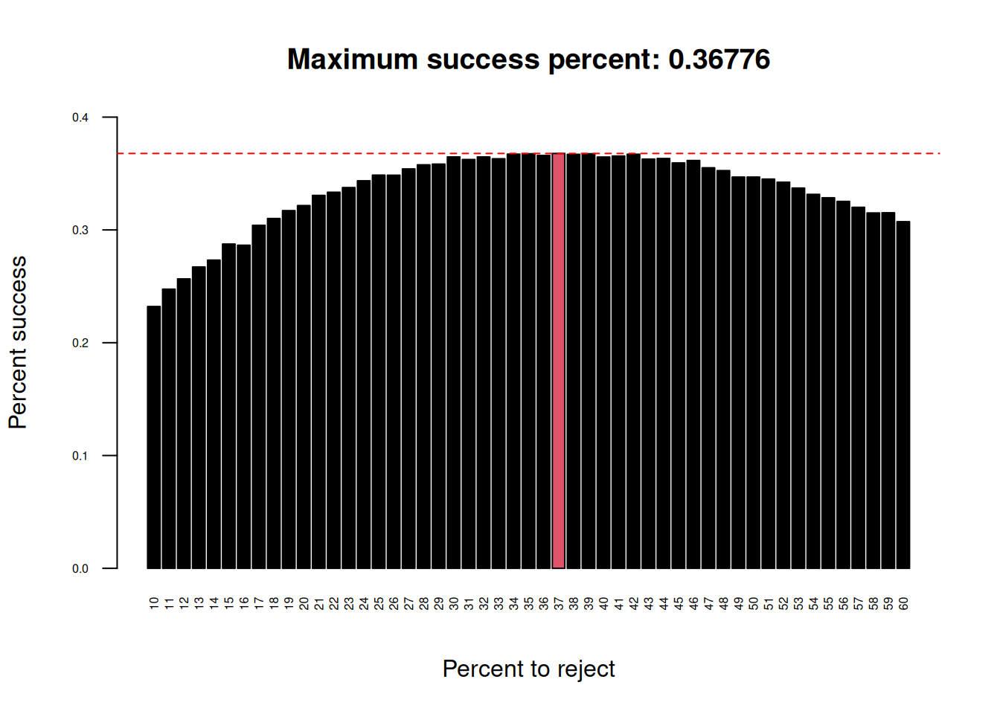
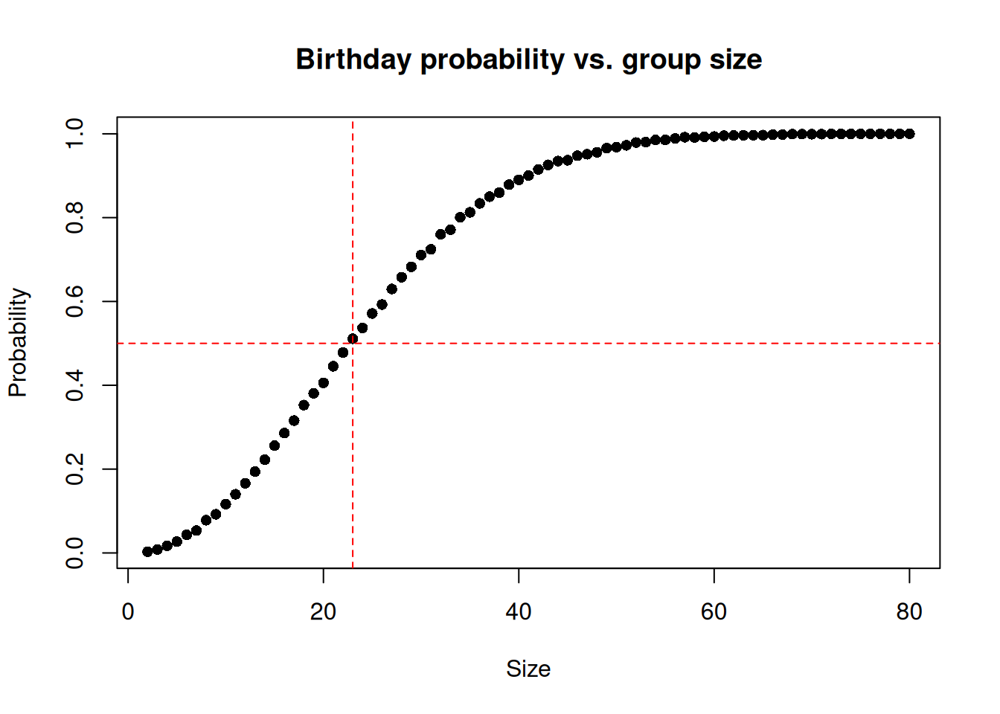

Last updated: 2020-08-30
Checks: 7 0
Knit directory: bioinformatics_tips/
This reproducible R Markdown analysis was created with workflowr (version 1.6.2). The Checks tab describes the reproducibility checks that were applied when the results were created. The Past versions tab lists the development history.
Great! Since the R Markdown file has been committed to the Git repository, you know the exact version of the code that produced these results.
Great job! The global environment was empty. Objects defined in the global environment can affect the analysis in your R Markdown file in unknown ways. For reproduciblity it’s best to always run the code in an empty environment.
The command set.seed(20200503) was run prior to running the code in the R Markdown file. Setting a seed ensures that any results that rely on randomness, e.g. subsampling or permutations, are reproducible.
Great job! Recording the operating system, R version, and package versions is critical for reproducibility.
Nice! There were no cached chunks for this analysis, so you can be confident that you successfully produced the results during this run.
Great job! Using relative paths to the files within your workflowr project makes it easier to run your code on other machines.
Great! You are using Git for version control. Tracking code development and connecting the code version to the results is critical for reproducibility.
The results in this page were generated with repository version 9488d75. See the Past versions tab to see a history of the changes made to the R Markdown and HTML files.
Note that you need to be careful to ensure that all relevant files for the analysis have been committed to Git prior to generating the results (you can use wflow_publish or wflow_git_commit). workflowr only checks the R Markdown file, but you know if there are other scripts or data files that it depends on. Below is the status of the Git repository when the results were generated:
Ignored files:
Ignored: .Rhistory
Ignored: .Rproj.user/
Note that any generated files, e.g. HTML, png, CSS, etc., are not included in this status report because it is ok for generated content to have uncommitted changes.
These are the previous versions of the repository in which changes were made to the R Markdown (analysis/simulation.Rmd) and HTML (docs/simulation.html) files. If you’ve configured a remote Git repository (see ?wflow_git_remote), click on the hyperlinks in the table below to view the files as they were in that past version.
| File | Version | Author | Date | Message |
|---|---|---|---|---|
| Rmd | 9488d75 | davetang | 2020-08-30 | Birthday problem |
| html | f79e56e | davetang | 2020-08-16 | Build site. |
| Rmd | a3f4d8f | davetang | 2020-08-16 | Secretary problem |
| html | bcfc6f4 | davetang | 2020-08-15 | Build site. |
| Rmd | 8d17ba8 | davetang | 2020-08-15 | Monte Carlo simulation |
Monte Carlo simulation are useful for estimating probablities and relies on repeated random sampling to generate a probability distribution. You may have heard of the Monty Hall problem:
Suppose you're on a game show, and you're given the choice of three doors: Behind one door is a car; behind the others, goats. You pick a door, say No. 1, and the host, who knows what's behind the doors, opens another door, say No. 3, which has a goat. He then says to you, "Do you want to pick door No. 2?" Is it to your advantage to switch your choice?Let’s simulate the Monty Hall problem 50,000 times each, for not switching and for switching to see if it is advantageous to switch.
monty_hall_game <- function(switch = TRUE){
# randomly assign what's behind the three doors
doors <- 1:3
behind <- sample(c("car", "goat", "goat"))
door_car <- doors[behind == "car"]
# randomly pick a door
my_pick <- sample(doors, 1)
# if we picked the door with the car, randomly show one of the doors with the goat
if(my_pick == door_car){
door_show <- sample(doors[-my_pick], 1)
# if we picked a door with a goat, show the door with the other goat
} else {
door_show <- doors[-c(my_pick, door_car)]
}
# if we choose to switch
if(switch == TRUE){
final_pick <- doors[-c(my_pick, door_show)]
# if we stick with our original pick
} else {
final_pick <- my_pick
}
final_pick == door_car
}
num_rep <- 50000
result_no_switch <- replicate(num_rep, monty_hall_game(FALSE))
result_switch <- replicate(num_rep, monty_hall_game(TRUE))
paste0("If we stick with our original choice, our success rate is ", mean(result_no_switch) * 100, "% in ", num_rep, " tests.")[1] "If we stick with our original choice, our success rate is 33.366% in 50000 tests."paste0("If we switch from our original choice, our success rate is ", mean(result_switch) * 100, "% in ", num_rep, " tests.")[1] "If we switch from our original choice, our success rate is 66.78% in 50000 tests."From the Monte Carlo simulation, we see that if we don’t switch, we get the door with the prize (car) 33% of the time. This makes sense because if we disregard the switch, there is a 1/3 chance of picking the prize. If we make the switch, we get the door with the prize 66% of the time! This also makes sense because before the switch, there is a 33% chance of getting the prize door. Therefore 66% of the time, the prize door is among the other two doors that you didn’t pick. When the host opens the non-prize door (out of the two you didn’t pick), the remaining door has a 66% chance of being the prize door.
The Secretary problem is defined as follows:
Imagine an administrator who wants to hire the best secretary out of n rankable applicants for a position. The applicants are interviewed one by one in random order. A decision about each particular applicant is to be made immediately after the interview. Once rejected, an applicant cannot be recalled. During the interview, the administrator gains information sufficient to rank the applicant among all applicants interviewed so far, but is unaware of the quality of yet unseen applicants. The question is about the optimal strategy (stopping rule) to maximise the probability of selecting the best applicant. If the decision can be deferred to the end, this can be solved by the simple maximum selection algorithm of tracking the running maximum (and who achieved it), and selecting the overall maximum at the end. The difficulty is that the decision must be made immediately.The optimal stopping rule prescribes always rejecting the first \(n/e\) (36.7879441%) applicants that are interviewed and then stopping at the first applicant who is better than every applicant interviewed so far (or continuing to the last applicant if this never occurs).
optimal_stopping <- function(n = 100, perc = 37){
# create pool of randomly arranged numbers
# where n is the best applicant, e.g. for n = 100, 100 is the best
my_pool <- sample(1:n)
# percentage of pool to use for comparison, i.e. reject set
my_cutoff <- floor(perc * n / 100)
# create comparison set
my_comp_set <- my_pool[1:my_cutoff]
# best applicant in the comparison set
my_comp_best <- max(my_comp_set)
# if the best applicant is included in the comparison set
# then we have missed hiring the best applicant
if(my_comp_best == n){
return(FALSE)
}
# create set to search for best applicant
my_hire_set <- my_pool[(my_cutoff+1):n]
# applicants that are better than the best applicant in the comparison set
my_hire_better <- my_hire_set > my_comp_best
# first applicant that is better than the best applicant in the comparison set
my_hire_best <- my_hire_set[min(which(my_hire_better))]
# is this the best applicant?
my_hire_best == n
}
num_rep <- 50000
pool_size <- 1000
start_time <- Sys.time()
perc_to_test <- 10:60
tests <- lapply(X = perc_to_test, FUN = function(x){
replicate(num_rep, optimal_stopping(n = pool_size, perc = x))
})
end_time <- Sys.time()
end_time - start_timeTime difference of 2.2915 minstest_means <- sapply(tests, mean)
names(test_means) <- perc_to_test
my_col <- (test_means == max(test_means)) + 1
barplot(test_means,
xlab = "Percent to reject",
ylab = "Percent success",
cex.names = 0.5,
cex.axis = 0.5,
las = 2, ylim = c(0, .4),
col = my_col,
main = paste0("Maximum success percent: ", max(test_means)))
abline(h = max(test_means), lty = 2, col = "red")
| Version | Author | Date |
|---|---|---|
| f79e56e | davetang | 2020-08-16 |
We ran simulations with a hiring pool size of 1000 applicants and repeated the optimal stopping strategy 50000 times at a range of percentages: 10, 60. We can see that the optimal solution is to reject around 36.7879441% (\(n/e\)) of the total number of applicants and to use them as a comparative set.
The Birthday problem concerns the probability that, in a set of n randomly chosen people, some pair of them will have the same birthday. By the pigeonhole principle, the probability reaches 100% when the number of people reaches 367 (since there are only 366 possible birthdays, including February 29). However, 99.9% probability is reached with just 70 people, and 50% probability with 23 people. These conclusions are based on the assumption that each day of the year (excluding February 29) is equally probable for a birthday.
same_birthday <- function(n = 23){
my_samp <- sample(x = 1:365, size = n, replace = TRUE)
any(duplicated(my_samp))
}
num_rep <- 10000
my_sizes <- 2:80
start_time <- Sys.time()
tests <- lapply(X = my_sizes, FUN = function(x){
replicate(num_rep, same_birthday(x))
})
end_time <- Sys.time()
end_time - start_timeTime difference of 8.861435 secstest_means <- sapply(tests, mean)
my_df <- data.frame(x = my_sizes,
prob = test_means)
plot(my_df,
pch = 16,
main = "Birthday probability vs. group size",
xlab = "Size",
ylab = "Probability")
abline(h = 0.5, lty = 2, col = "red")
abline(v = 23, lty = 2, col = "red")
We have a function called same_birthday that simply takes a sample of n size from all birthdays in a non-leap year and returns TRUE there are two identical birthdays and FALSE when all samples are unique. We repeat the sampling 10000 times using a range of n’s: 2, 80. We plot the test_means which is the average number of successes in 10000 times. We can see that 50% probability is reached with just 23 people.
sessionInfo()R version 4.0.2 (2020-06-22)
Platform: x86_64-apple-darwin17.0 (64-bit)
Running under: macOS Catalina 10.15.6
Matrix products: default
BLAS: /Library/Frameworks/R.framework/Versions/4.0/Resources/lib/libRblas.dylib
LAPACK: /Library/Frameworks/R.framework/Versions/4.0/Resources/lib/libRlapack.dylib
locale:
[1] en_AU.UTF-8/en_AU.UTF-8/en_AU.UTF-8/C/en_AU.UTF-8/en_AU.UTF-8
attached base packages:
[1] stats graphics grDevices utils datasets methods base
other attached packages:
[1] workflowr_1.6.2
loaded via a namespace (and not attached):
[1] Rcpp_1.0.5 rstudioapi_0.11 whisker_0.4 knitr_1.29
[5] magrittr_1.5 R6_2.4.1 rlang_0.4.7 stringr_1.4.0
[9] tools_4.0.2 xfun_0.16 git2r_0.27.1 htmltools_0.5.0
[13] ellipsis_0.3.1 rprojroot_1.3-2 yaml_2.2.1 digest_0.6.25
[17] tibble_3.0.3 lifecycle_0.2.0 crayon_1.3.4 later_1.1.0.1
[21] vctrs_0.3.2 promises_1.1.1 fs_1.5.0 glue_1.4.1
[25] evaluate_0.14 rmarkdown_2.3 stringi_1.4.6 compiler_4.0.2
[29] pillar_1.4.6 backports_1.1.9 httpuv_1.5.4 pkgconfig_2.0.3